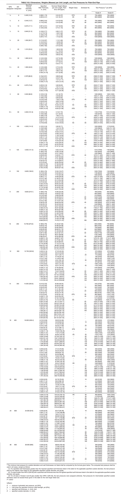

外径(mm):
壁厚(mm):
计算结果是:
ASTM A53标准水压值优先查表获取水压值，当非标准尺寸时候使用上述计算公式
外径(mm):
壁厚(mm):
选择钢级:
计算结果是:
| 钢级(mm) | 规定外径(mm) | 确定S 规定最小屈服强度百分数 | 脚标说明 | |
|---|---|---|---|---|
| 标准试验压力 | 选用试验压力 | |||
| L175或A25 | ≤141.3 | 60a | 75a |
a D≤88.9钢管，试验压力 不需超过17.0MPa; D＞88.9钢管， 试验压力不需超过19.0MPa b 试验压力不需超20.5MPa c D≤406.4钢管，试验压力 不需超过50.0MPa; D＞406.4钢管， 试验压力不需超过25.0MPa |
| L175P或A25P | ≤141.3 | 60a | 75a | |
| L210或A | 任意 | 60a | 75a | |
| L245或B | 任意 | 60a | 75a | |
| L290或X42 至L830或X120 | ≤141.3 | 60a | 75a | |
| ＞141.3至219.1 | 75b | 75c | ||
| ＞219.1至508 | 85b | 85c | ||
| ≥508 | 90b | 90c | ||
外径(mm):
壁厚(mm):
长度(mm):
支数(mm):
计算结果是:
API 5L 46TH/GB/T9711-2023 断后伸长率最低要求计算
试样宽度(mm):
公称壁厚(mm):
最小抗拉强度(MPa)选择钢级:
计算结果是:
外径(mm):
壁厚(mm):
选择钢级:
计算结果是:
水压值四舍五入到最近接的0.5MPa
ASTM A53水压参照表
